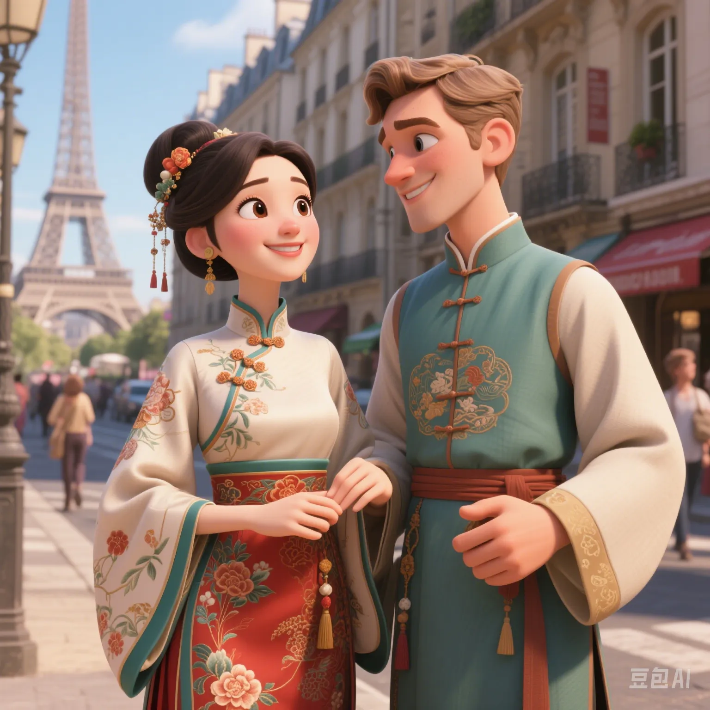

The Hanfu Fever Sweeps the World: How Does Traditional Culture Conquer Generation Z?
PeaceLove.Top Insights :2025-04-17
The Rise of the Hanfu Fever 🎋
In recent years, the Hanfu fever has swept across China, especially among the youth. More and more members of Generation Z have begun to pay attention to and try on Hanfu, a symbol of traditional Chinese culture 👘. This phenomenon is not limited to China. Globally, many foreign young people have also shown their love for Hanfu, and some even wear it as a fashion trend. Different from ethnic minority costumes or other traditional clothing in the past, Hanfu represents a unique charm in Chinese culture. It is not only clothing but also carries the inheritance of history, etiquette, and aesthetics ✨. Today, let's explore the reasons behind this phenomenon and how it has captured the hearts of the younger generation 💖.
Generation Z's Enthusiasm for Hanfu 💥
1. Return of Cultural Identity
For many young people, wearing Hanfu is not only an expression of traditional culture but also a way to find their cultural roots 🌱. Especially in the process of globalization, young people sometimes feel lost in cultural identity. Through Hanfu, they can more intuitively access the wisdom and charm of their ancestors 📜.
2. The Boosting Effect of Social Media 📱
The popularity of social media platforms such as live - streaming platforms, short - video apps, and Weibo has provided a broad platform for the spread of Hanfu culture. Through short videos, challenges, and promotions by fashion bloggers, more and more young people have joined the experience of Hanfu culture, which has stimulated their desire to buy and interest 🌍. This way of spreading has also enabled Hanfu culture to expand globally, not just being confined to China.
3. Incorporation of Modern Fashion Elements
Although traditional Hanfu is very beautiful, its inconvenience to wear and complex styling used to deter many people. Now, Hanfu designers have begun to add modern fashion elements, such as casual designs and innovative materials, making Hanfu more suitable for daily wear while maintaining its traditional beauty. The emergence of simplified Hanfu makes more young people feel that it has both cultural depth and a sense of fashion ✨.
The Globalization of Hanfu Culture 🔥
With the increasing influence of Chinese culture, Hanfu culture has begun to go global and has become a window for young people around the world to understand traditional Chinese culture 🔎. From Europe and America to Southeast Asia, and even Japan and South Korea, more and more foreigners are starting to try on Hanfu and participate in Hanfu activities during specific festivals. They not only regard Hanfu as a fashion trend but also use this clothing to experience and feel Chinese culture. The phenomenon of Hanfu culture going global shows that through appropriate modern transformation, traditional culture can break through cultural and language barriers and become a highlight of global culture 🌏. For example, at some cultural festivals in the United States, there have been special Hanfu exhibitions, attracting a large number of foreign young people to visit and participate. Through Hanfu, young people can not only appreciate traditional art and handicrafts but also show their cultural identity through clothing.
The Cultural Phenomenon Behind the Hanfu Fever 📚
1. Rediscovering Tradition and Exploring the Self
For Generation Z, personalization and diversification are their important characteristics. While constantly exploring modern lifestyles, they have also begun to show interest in traditional culture. This reverse trend is not limited to Hanfu. Traditional cultural elements such as ancient - style music and classical poetry are also becoming their pursuits 📜. Through Hanfu, young people not only find a personalized way of dressing but also find cultural identity and a sense of inner belonging 💖.
2. Expression of Rebellious and Independent Consciousness
Different from the dominant position of Western pop culture, the popularity of Hanfu is actually a rebellion against traditional culture. It is the young people's response to the globalization trend. By wearing Hanfu, young people show their independent thinking and aesthetics and also express their personality demands in the global wave 🌟.
3. Enhancement of Cultural Confidence
With the revival of Hanfu, cultural confidence has gradually become a powerful force in the hearts of this generation of young people 💪. More and more young people show the diversity and depth of Chinese culture to the outside world by participating in Hanfu activities and taking ancient - style photos. They are proud of the unique charm of Chinese culture. Cultural confidence is not limited to Hanfu but also extends to music, literature, diet, etc., making Chinese culture gradually become an important part of global culture 🏆.
Conclusion: The Hanfu Fever Is the Starting Point of Cultural Revival 🎉
It can be said that the popularity of the Hanfu fever is not just a fashion phenomenon but also a part of cultural revival. For Generation Z, Hanfu is not just a piece of clothing. It represents a cultural identity and is a re - understanding and expression of traditional culture 💫. Through modern improvement, Hanfu has successfully met the multiple needs of young people for fashion, personality, and culture, and has also provided a new perspective for global cultural exchange 🌐. In the future, Hanfu is not only a unique choice for Chinese young people but also will be expected to become a striking business card on the global cultural stage✨.